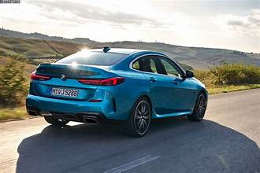
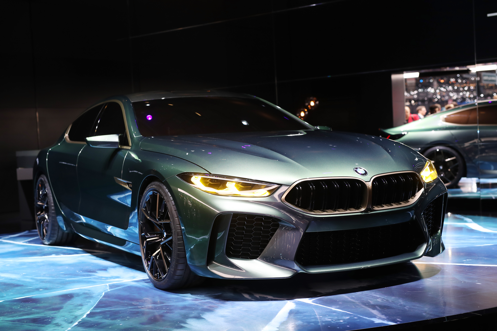

The BMW 2 Series Gran Coupé (model code F44) is a subcompact executive sedan produced by BMW.[2][3] It was revealed on 16 October 2019, and officially premiered at the 2019 Los Angeles Auto Show in November.[4] It was launched in worldwide markets in March 2020.[5] For most markets, the 2 Series Gran Coupé is the smallest four-door sedan offered by BMW, except in China and Mexico where the F52 1 Series sedan was offered. Overview The 2 Series uses the front-wheel drive-based UKL2 architecture and uses a multi-link rear suspension system.[6] As the result, despite its similar name, it is mechanically unrelated to the F22 2 Series coupé and convertible. Compared to the F22 2 Series, the F44 has 33 mm (1.3 in) more knee room, 14 mm (0.6 in) more headroom, and a 40 litres (1.4 cu ft) larger boot capacity at 430 litres (15 cu ft).[7] It shares the same front hood, fender panel, dashboard and suspension as the F40 1 Series.[8][9] All petrol and diesel engines are installed with particulate filters and meet the Euro 6d-TEMP emissions standard.[10] Diesel engines also have AdBlue selective catalytic reduction.[11] 218i models are available with a 6-speed manual transmission or a 7-speed dual-clutch transmission.[12] 228i xDrive, M235i xDrive, and 220d models are only available with an 8-speed automatic transmission.[13] 220i models are only available with a 7-speed dual-clutch transmission.
  home